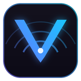

Nora
● Kokpit
Serwis
Ekrany
Postać
Dziennik
▶ Start streamu
✓ Sprawdzenie
—
▢
✕
Nora
Przygotowuję wszystko do streamu…
▶ Start streamu
🎬 OBS w tle
● Kokpit
🌐 Serwis
Uruchamianie ze strony
📜 Dziennik
⏻ Zamknij wszystko